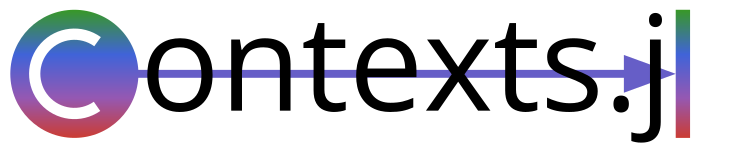

Contexts.jl - A Julia Package for Context-Oriented-Programming
Contexts.jl is a Julia package which implements syntax in Julia to allow context-orient-programming (COP) with roles and mixins. It also includes a Petri-net-based approach for the management of the contexts during runtime.
You can find the code here on GitHub.
Contact
The current main developer is Christian Gutsche, feel free to contact him via e-mail: <christian.gutsche@tu-dresden.de>
Supporting and Citing
If you use Contexts.jl in research and you want to cite it, we would be grateful to cite the following publications:
For context modeling and context-oriented programming:
@INPROCEEDINGS{10803426,
author={Gutsche, Christian and Prokopets, Volodymyr and Wang, Zizhe and Götz, Sebastian and Aßmann, Uwe},
booktitle={2024 50th Euromicro Conference on Software Engineering and Advanced Applications (SEAA)},
title={Context-Oriented Programming and Modeling in Julia with Context Petri Nets},
year={2024},
volume={},
number={},
pages={1-9},
doi={10.1109/SEAA64295.2024.00011},
ISSN={2376-9521},
month={Aug},}For context-role-oriented modeling and programming:
@INPROCEEDINGS{11025887,
author={Gutsche, Christian and Götz, Sebastian and Prokopets, Volodymyr and Aßmann, Uwe},
booktitle={2025 IEEE/ACM 20th Symposium on Software Engineering for Adaptive and Self-Managing Systems (SEAMS)},
title={Context-Role Oriented Programming in Julia: Advancing Swarm Programming},
year={2025},
volume={},
number={},
pages={85-95},
doi={10.1109/SEAMS66627.2025.00017}}
Content
The implementation was strongly influenced by the following works:
T. Kühn, M. Leuthäuser, S. Götz, C. Seidl, and U. Aßmann, “A meta-model family for role-based modeling and programming languages”, in Software Language Engineering (B. Combemale, D. J. Pearce, O. Barais, and J. J. Vinju, eds.), (Cham), pp. 141–160, Springer International Publishing, 2014.
R. Hirschfeld, P. Costanza, and O. Nierstrasz, “Context-oriented programming”, Journal of Object Technology, 2008.
R. Muschevici, D. Clarke, and J. Proenca, “Feature petri nets”, vol. 2, pp. 99–106, 01 2010.
N. Cardozo, S. González, K. Mens, and T. D’Hondt, “Context Petri Nets: Definition and Manipulation”, Vrije Universiteit Brussel, Apr. 2012.
Acknowledgements
This package was developed within a research project of the Boysen–TU Dresden–Research Training Group and the Chair of Software Technology at TU Dresden. We want to thank the Boysen–TU Dresden–Research Training Group for the financial and general support that has made the developement possible. The Research Training Group is co-financed by the Friedrich and ElisabethBoysen Foundation and the TU Dresden.
The work is also supported by the German Research Foundation with the STRASSE project (SFB/TRR339, Project ID453596084).